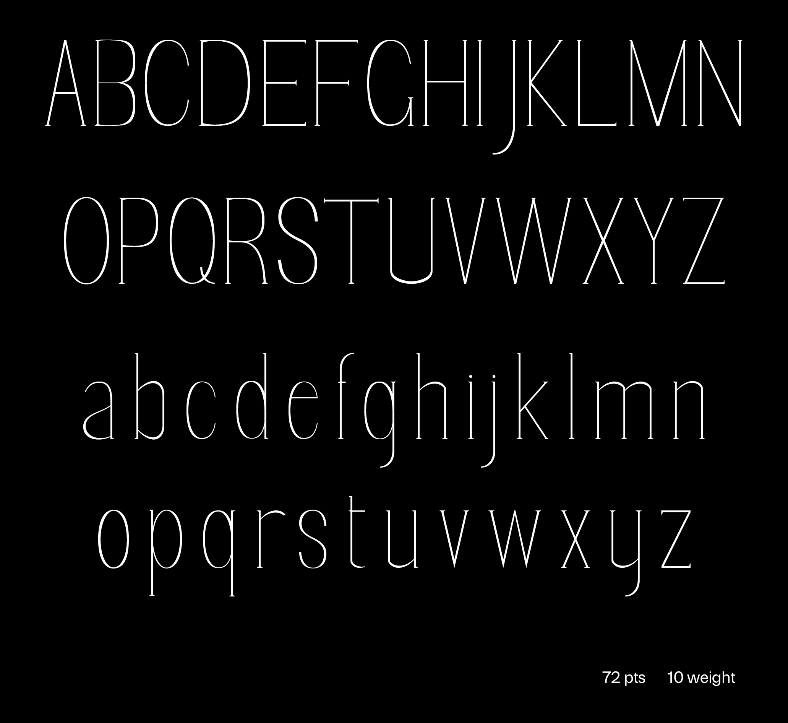
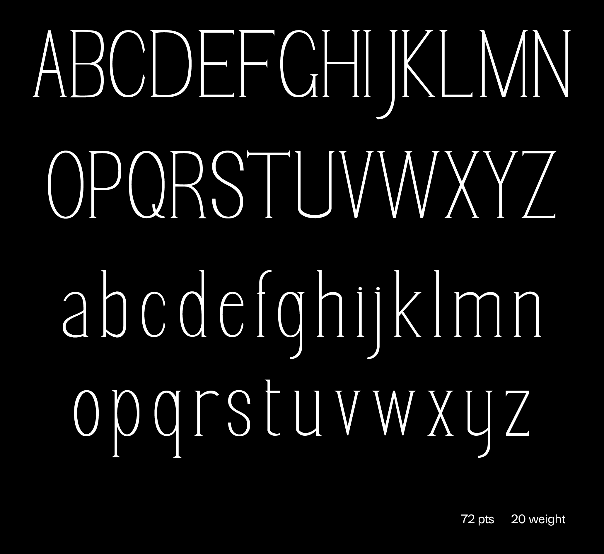

My initial typographic investigation resulted in Monopoly, a font designed to capture the "artificial order" of isolated moments. To archive its origins, I produced Very Monopoly, an index correlating specific photographs with messages received the day they were captured.
Year: 2026
Medium: Typeface Design

